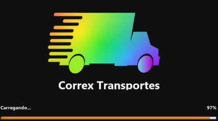

<!DOCTYPE html>
<html lang="pt-br"></html>
<html>

<head>
	<title>Correx - Gustavo Proença</title>

	<meta charset="utf-8">
	<meta name="viewport" content="width=device-width, initial-scale=1.0">
	<link rel="stylesheet" href="css/style.css">
	<link rel="preconnect" href="https://fonts.googleapis.com">
	<link rel="preconnect" href="https://fonts.gstatic.com" crossorigin>
	<link href="https://fonts.googleapis.com/css2?family=Montserrat:wght@100;300;400&display=swap" rel="stylesheet">
	<script type="text/javascript" src="js/script.js"></script>
</head>


<body>
	<div id="navigation" class="navigation">
		<ul>
			<li><a href="index.html">Home</a></li>
			<li><a href="portfolio.html">Portfólio</a></li>
			<li><a href="curriculo.html">Curriculo</a></li>
			<li><a href="contato.html">Contato</a></li>
			<li id="threeline-icon" class="threeline-icon" onclick="openNav()">&#9776;</li>
		</ul>
	</div>
	<div class="main">

		<ul class="caminho">
			<li><a href="index.html">Home</a></li>
			<li>></li>
			<li><a href="portfolio.html">Portfólio</a></li>
			<li>></li>
			<li>Correx</li>
		</ul>
		<h1>Projeto Correx</h1>
		<div class="imgprojeto">
			
		</div>
		<div class="description">
			<h2>Descrição do Projeto</h2>
			<p>Este trata-se de um projeto realizado na matéria de C# na faculdade de Tecnólogo em Análise e Desenvolvimento de Sistemas.
			   Indo por todas as vertentes de um sistema de entregas, o Correx trata-se de um projeto em grupo que incentou o conhecimento de novas tecnologias e o trabalho em equipe.
			   O projeto foi aclamado na matéria em questão
			</p>
			<h2>Tecnologias Usadas</h2>
			<p>C# e MySQL</p>
		</div>
		<a href="index.html">Voltar ao início<a>
	</div>
</body>

</html>